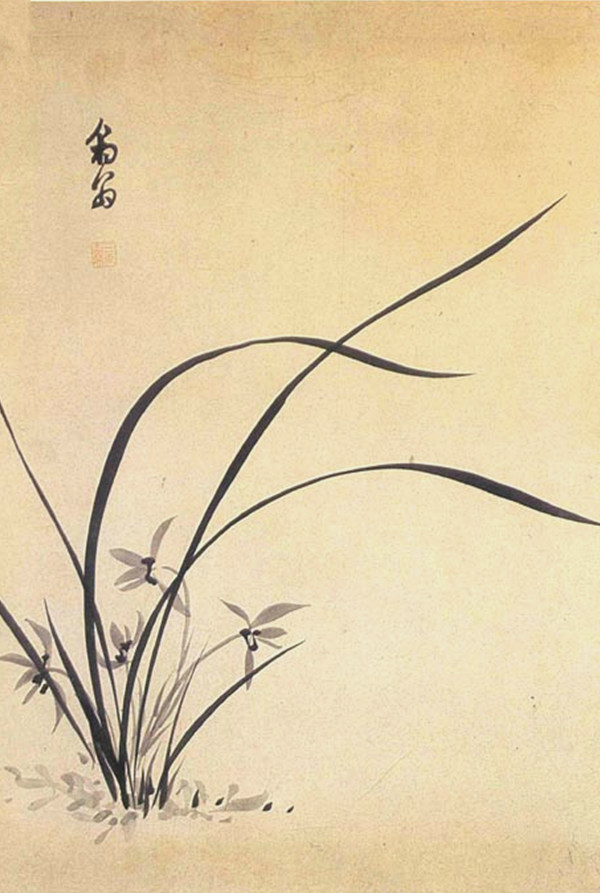

오르키스는 사티로스와 요정 사이에서 태어난 아들이었다. 그는 사티로스의 피를 이어받은 청년답게 대단히 정열적이었다.
오르키느는 주신 바쿠스의 축제 때 술을 마시고 욕망을 주체하지 못해 여사제들을 덮쳤다.
그러자 화가 난 신도들이 한꺼번에 달려들어 그의 사지를 갈기갈기 찢어 버렸다.
오르키스의 아버지는 조각난 아들을 다시 ㅏㅎ나로 합쳐 달라고 신들에게 빌었다.
그러나 신들은 오르키스의 평소 행실을 들어 차갑게 거절했다. 아버지는 아들이 살아있는 동안에는 결코 충조갈 수 없는
욕망 때문에 골칫거리였으나, 이제 죽었으니 만족스러울 것이라며 신들을 졸라댔다. 신들은 그 말에도 일리가 있다고 여겨
그의 사지를 모아 꽃이 되게 해 주었다. 난초는 절제의 상징이지만, 고대 그리스 사람들은 난초 뿌리를 먹으면 한순간 사티로스처럼
욕망을 주체할 수 없게 된다고 믿어 최음제로 쓰기도 했다.
